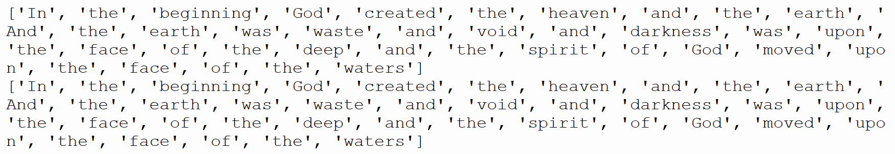
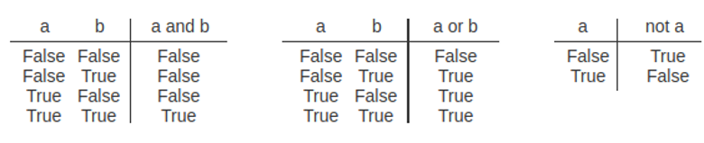
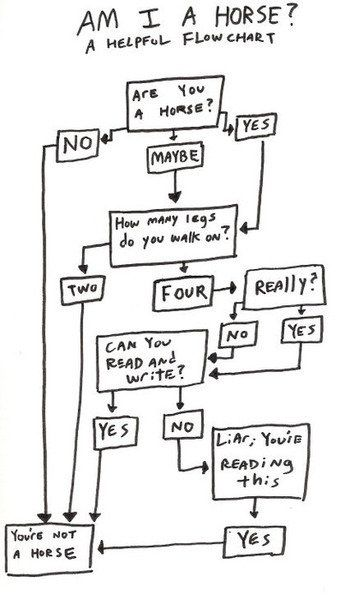
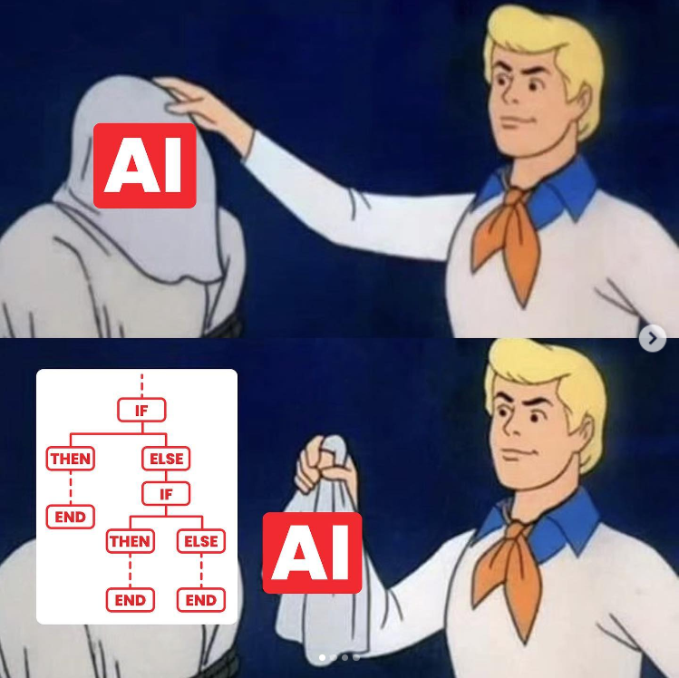
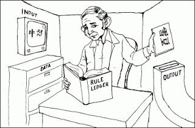

from textblob import TextBlob
creation = "In the beginning God created the heaven and the earth. \
And the earth was waste and void; and darkness was upon the face of the deep: and the spirit of God moved upon the face of the waters."
b = TextBlob(creation)01-09-24 (Friday)
Lord, you rule the world with a good and rightful code.
We ask for your wisdom to see things correctly and represent them faithfully.
Fill us with your justice so that we may know how to reflect it in the way we code,
Give us humility so that we may know the limits of our knowledge and its application in society,
Give us the courage to stand firmly when we feel pressured to go beyond these limits,
And give us responsibility as rulers we may be in the areas of society where you put us.
Lord, we want to reflect your good rule, so that people of all nations may fear your name.
Make known to us the path of life;
For in your presence there is fullness of joy;
and at your right hand are pleasures forevermore (Psalm 16).
Amen.
1 Quiz 2 (in Moodle)
2 Example: a nasty list error
Let’s pickup from yesterday’s lab about TextBlob processing.
Suppose we now want to create a list whose indexes do not count the words with certain lengths, but rather add these words to a list. We want to know which words from the text have a certain size.
For that, we try to create a list with 20 positions (corresponding to word lengths) containing an empty list.
Then, as we pass through every word of the text, we add the word to the list in the corresponding position:
words_of_each_length = [[]]*20 # creating a list with 20 lists
for aWord in b.words:
words_of_each_length[len(aWord)].append(aWord) # appending to the list in the corresponding position according to lengthNow, try to check the lists corresponding to words of size 2 and 3, like print(words_of_each_length[3]) and print(words_of_each_length[4])
What happened??? The lists are the same and contain all words???

Remember we talked about how LISTS ARE MUTABLE, so that’s why we need to copy?
So, our error happened when we did words_of_each_length = [[]]*20
Check the ids of the lists in each position of our greater list:
print(id(words_of_each_length[3]))
print(id(words_of_each_length[4]))They are the same! We have been adding words to the same list, which is repeated in every position of words_of_each_length.
How to fix that? Well, we need to make sure each list is a different list. Using the multiplier *20 won’t do. There are many ways to do that, and we will see some syntax later, but a possible solution is to declare the list as:
words_of_each_length = [[] for i in range(20)]Now, check the ids of each element. This should work by now. Whew!
3 Comparison operators
| Operator | Name |
|---|---|
| == | Equal |
| != | Not equal |
| > | Greater than |
| < | Less than |
| >= | Greater than or equal to |
| <= | Less than or equal to |
- Result will always be a Boolean object! (
TrueorFalse) - In principle, would works for numbers (
int,float,complex), sequences (list,tuple,string) and dictionaries (dict)
3.1 Floating point comparisons
a = 0.15 + 0.15
b = 0.10 + 0.20
print(a == b)
print(a >= b)False
FalseWhat is happening here? How might we perform a reasonable comparison between these floating point numbers?
One way to solve: use math.isclose():
import math
a = 0.15 + 0.15
b = 0.10 + 0.20
print(math.isclose(a,b))True3.2 Sequence comparison
- For equality and non-equality:
a = "Hi"
b = "Hi"
c = "Hello"
print(a == b)
print(a == c)
print(a != b)
print(a != c)True
False
False
Truea = [1,2]
b = [1,2]
print(a == b)TrueHowever, order matters:
a = [1,2]
b = [2,1]
print(a == b)False(after all, with strings it is also easy to see that Hi is different than iH).
If we need to ignore order, and compare only elements, we can compare the sorted lists:
a = [1,2]
b = [2,1]
print(sorted(a) == sorted(b))True3.3 Greater and smaller than
Sequences follow a lexicographical ordering: first the first two items are compared, and if they differ this determines the outcome of the comparison; if they are equal, the next two items are compared, and so on, until either sequence is exhausted.
For example, all comparisons below are True:
(1, 2, 3) < (1, 2, 4)
[1, 2, 3] < [1, 2, 4]
'ABC' < 'C' < 'Pascal' < 'Python'
(1, 2, 3, 4) < (1, 2, 4)
(1, 2) < (1, 2, -1)
(1, 2, 3) == (1.0, 2.0, 3.0)
(1, 2, ('aa', 'ab')) < (1, 2, ('abc', 'a'), 4)3.4 Comparison operator chaining
Differently from most other languages, Python supports operator chaining, like 2 < x < 5.
- Chaining compares left to right, evaluating a < b first
- If the result is true, then b < c is evaluated next
age = int(input('Please enter your age: '))
if 12 < age < 20:
print('You are a teenager')4 Boolean operators
- These receive only Booleans as operands and give a Boolean as result.

4.1 Examples
Example 1
if (x >= 1) and (x <=10):
print('x is between 1 and 10 inclusive')Example 2
if not (x == ''):
print('x is not the empty string')Example 3
if (x < 1) or (x > 10):
print('x is not between 1 and 10')Example 4
message = "you fool!"
if "fool" not in message:
print("Message does not contain offensive language")4.2 Short-circuit evaluations
In (A and B), if A is false, then so is the expression, and there is no need to evaluate B.
In (A or B), if A is true, then so is the expression, and there is no need to evaluate B.
Keep an eye on that!
4.3 Remember precedence order!
- Parentheses:
() - Exponents:
** - Multiplication, divisions and modulus:
* / // % - Addition and subtraction:
+ - - Comparisons:
<= < >= > == != is in - Boolean
not - Boolean
and - Boolean
or
5 Membership operators
- The membership operators in returns
Trueif the left operand matches the value of some element in a container
sizes = [3, 5, 7, 9.5, 10, 10.5, 11]
if 10 in sizes:
print('Sizes include size 10')Sizes include size 10It can also be used to check whether a substring is part of a larger string:
data = '123abc456'
if 'abc' in data:
print('abc found in data')abc found in data6 Exercises
6.1 Exercise 1: selecting pH values
Write a program that prompts the user to enter a pH value. Then, print an indication of whether the pH given indicates an acid (value < 7.0), base (value > 7.0) or neutral (value is 7.0) substance.
Assuming that pH values range from 0.0 to 14.0, update your program so that only valid pH values are considered.
6.2 Exercise 2: getting the highest grade
Design and implement a program that inputs student grades from three students (A to F) and prints the highest one. (To make the problem more “interesting”, don’t use the max function to solve this problem.)
6.3 Exercise 3: are you a horse?
Implement an algorithm that would take an user to a series of questions to let him know if he is a horse. The procedure will follow the flowchart:

7 Algorithmic intelligence
Medical Expert Systems in the decades of 90 and 2000 used to have a similar behavior of what we are seeing so far: checking conditions and following through a flowchart. Programmers would add many Medical Logic Modules (MLM) to the health information system indicating what conditions and actions would be taken given some patient’s input.
This is today called the paradigm Classic or Symbolic Artificial Intelligence. (Nowadays we have a different paradigm, Adaptive AI, which uses data to train models instead of just elaborating logic flows).
- Questions:
- Can we consider intelligence as just following logic flowcharts?
- Is thinking just an algorithm? (See: computationalism/computational theory of mind)
- Is everything an algorithm? (See: pancomputationalism)

There are lot of critiques to this suggestive idea:
7.1 Critique 1: non-computability
Strictly speaking, there are problems that really can’t be solved by sequential, step-by-step instructions. These are called non-computable problems.
- Most of them include problems where there is not a way to determine if the machine will stop running code while searching for a solution (ex.: the Halting Problem).
A simple example: there is no algorithm to solve the 2048 game, famous in 2014.
However, problems like these can have their solution “approximated” with heuristics (exploring different options and seeing which is better). So one could argue that this is the way we think when trying to solve them… even though there is not an “analytical” way to solve.
7.2 Critique 2: the Chinese Room experiment
- Proposed by philosopher John Searle in 1980.

A person who does not understand Chinese sitting in a sealed room with a set of instructions in English for manipulating Chinese symbols. People outside the room slide Chinese symbols under the door, and the person inside follows a translation table to produce appropriate responses in Chinese, without actually comprehending the meaning of the symbols.
Searle’s argument is that even though the person inside the room can generate responses that seem intelligent to those outside, the person doesn’t truly understand Chinese; they are just manipulating symbols according to a set of rules. Similarly, Searle argues that a computer program that processes symbols according to a set of rules (like many AI systems) may simulate intelligence but does not possess genuine understanding or consciousness.
7.3 Critique 3: why are we really wanting that?
Philosopher Hubert Dreyfus made a powerful critique to Classic AI in his 1972 book “What Computers Can’t Do”.
His argument is long and complex, and involves noticing that human intelligence is fundamentally embodied and situated in a certain narrative, and since an artificial device wouldn’t have this, it cannot mimic completely how humans reason (we’re exploring a bit of that in a moment).
In any case, Dreyfus reflected on the quest for Artificial Intelligence as the quest of almost all Western science and philosophy (emphasis added):
“Since the Greeks invented logic and geometry, the idea that all reasoning might be reduced to some kind of calculation so that all arguments could be settled once and for all has fascinated most of the Western tradition’s rigorous thinkers. Socrates was the first to give voice to this vision. The story of artificial intelligence might well begin around 450B.C. when (according to Plato) Socrates demands of Euthyphro, a fellow Athenian who, in the name of piety, is about to turn in his own father for murder:”I want to know what is characteristic of piety which makes all actions pious … that I may have it to turn to, and to use as a standard whereby to judge your actions and those of other men. Socrates is asking Euthyphro for what modern computer theorists would call an “effective procedure,” “a set of rules which tells us, from moment to moment, precisely how to behave.
“The belief that such a total formalization of knowledge must be possible soon came to dominate Western thought. It already expressed a basic moral and intellectual demand, and the success of physical science seemed to imply to sixteenth-century philosophers, as it still seems to suggest to thinkers such as Minsky, that the demand could be satisfied.”
- Another philosopher, Michael Polanyi, explored how knowledge can be tacit - in other words, it cannot be turned to explicit words and rules (The Tacit Dimension).
- Sociologist Harry Collins, who we presented previously, has also argued about that in his books The Shape of Actions and Artifictional Intelligence. Algorithms still don’t seem to share with us a form of life in order to make sense of the dynamic, situated and embodied character of human life.
Take home message: algorithmic intelligence can correctly, and usefully, mimicry some human reasoning. We can be grateful for that. But this can be limited, and there are lots of reasons to believe that our intelligence goes beyond mere mathematical/logical rule-following. Therefore, so far, it seems we haven’t yet seen an undebatable way to mimic human intelligence exhaustively.
Calvin professor Ken Arnold’s opinion: Avoid Magical Thinking about AI